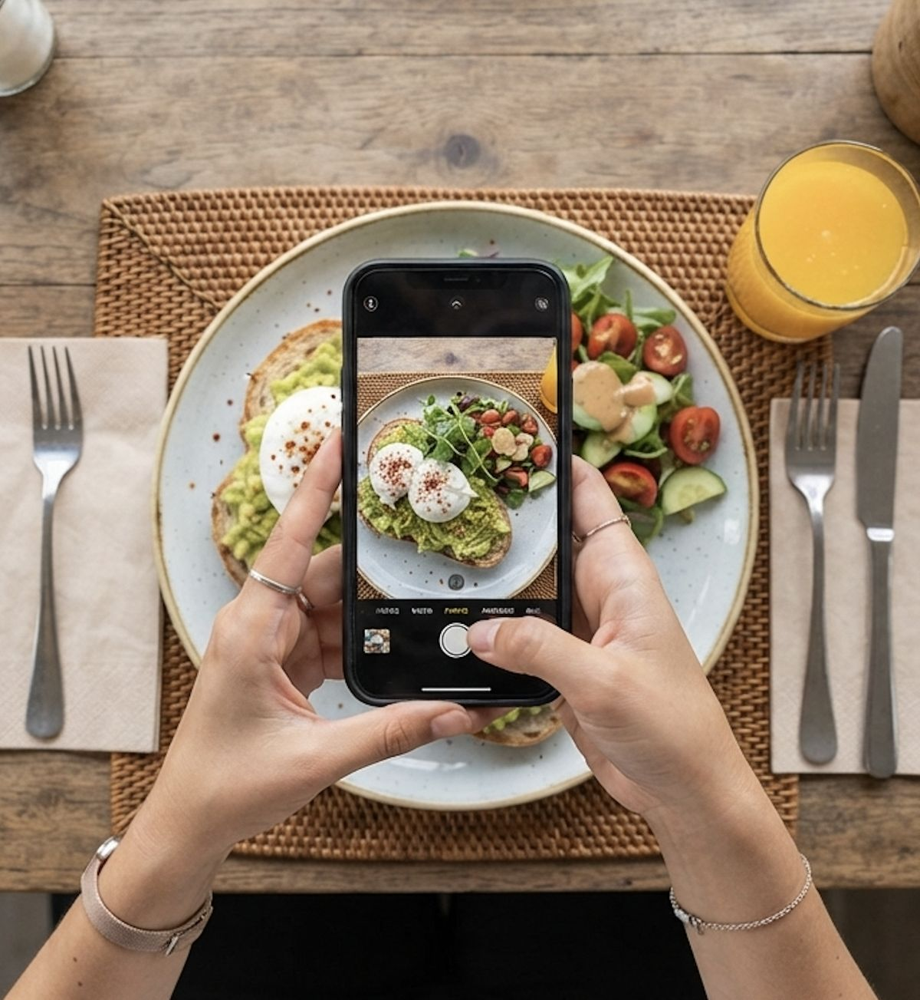
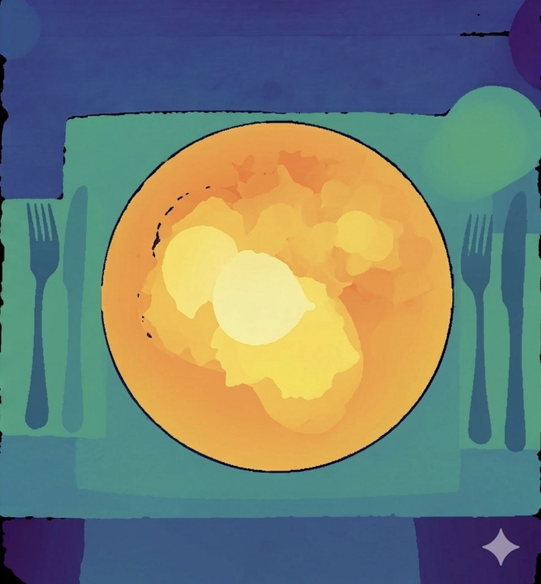

How the food image is captured
Before any model runs, the system needs a picture. The type of picture decides how accurate the answer can be.
For an LV user, capturing the image is harder than it sounds. A sighted person can frame the plate in one try, but a blind user may cut off half the plate or point the camera at the table. Good apps guide the user with audio, for example by saying "move left" until the whole plate is in view. Lookout already does this kind of guiding for packaged food [1]. With that in mind, here are the main ways researchers capture food.
A single photo from a phone camera
This is the most common and the most convenient option. Every phone has a camera, and one photo is quick to take. The recent YOLO study on the Swedish plate model worked with ordinary RGB photos of meals [4]. The big weakness is that one 2D photo has no depth. A tall pile of rice and a thin layer of rice can cover the same number of pixels, so the photo alone cannot tell them apart. This is fine for naming food and finding where it is, but weak for estimating how much there is.

Multiple photos or a short video
Taking several photos from different angles, or recording a short video while moving the phone, lets the system rebuild the 3D shape of the food. A 2026 study on bowl meals did this: it combined segmentation masks with multi-view 3D reconstruction to estimate the volume and weight of each food [5]. The trade-off is effort. Moving a phone around a plate is harder for a blind user, so this works best when the app gives clear audio instructions.
Depth cameras
Some newer phones have depth sensors, such as LiDAR or time-of-flight cameras, that measure the distance to every pixel. Depth turns a flat picture into a height map, which makes volume estimation much easier. Google's Nutrition5k dataset used overhead RGB-D (color plus depth) images of real cafeteria dishes for this reason [6]. A 2025 study showed how much weight information helps: when a predicted food weight from an RGB-D model was given to Gemini 2.5 Flash, its carbohydrate error dropped from 56.6% to 39.5% [7]. The downside is that only some phones have depth sensors.

Known-size reference objects
Another trick is to place an object of known size, such as a credit card or coin, next to the plate. Because the system knows its real size, it can convert pixels to centimeters. The plate itself can also act as the reference if its size is known. This is accurate but annoying, and it is not realistic to expect an LV user to carry and place a card at every meal.
Smart glasses
Camera glasses are an interesting option for LV users. They see the plate from the eater's own viewpoint and keep both hands free for eating. The image is captured from a natural angle, but the camera may be tilted or too close, so the same framing problems apply.
Summary: convenience vs accuracy
| Capture | Convenience for LV users | Portion accuracy | Notes |
|---|---|---|---|
| Single photo | High | Low | No depth |
| Multi-view / video | Medium | Medium to high | Needs audio guidance |
| Depth camera | High | High | Only some phones |
| Reference object | Low | Medium | User must carry it |
| Smart glasses | High | Low to medium | Hands free, extra hardware |